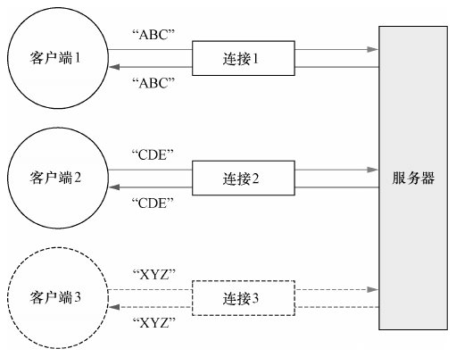

1. 第2章 你的第一款 Netty 应用程序
学习构建一个基于 Netty 的客户端和服务器。
应用程序需求: 客户端将消息发送给服务器, 而服务器再将消息回送给客户端。
通过本章的学习，开发者将获得关于 Netty 的一个关键实践经验: 通过 ChannelHandler 构建应用程序逻辑。
1.1. Netty 客户端/ 服务器概览

- Echo 客户端和服务器之间的交互是非常简单的; 在客户端建立一个连接之后, 它会向服务器发送一个或多个消息, 反过来, 服务器又会将每个消息回送给客户端。它充分体现了客户端/服务器系统中典型的请求-响应交互模式。
1.2. 编写 Echo 服务器
- 所有的 Netty 服务器都需要以下两部分
- 至少一个 ChannelHandler：该组件实现了服务器对从客户端接收的数据的处理, 即它的业务逻辑。
- 引导：这是配置服务器的启动代码。至少, 它会将服务器绑定到它要监听连接请求的端口上。
1.2.1. ChannelHandler 和业务逻辑
因为 Echo 服务器会响应传入的消息, 所以它需要实现 ChannelInboundHandler 接口, 用来定义响应入站事件的方法。这个简单的应用程序只需要用到少量的这些方法, 所以继承 ChannelInboundHandlerAdapter 类也就足够了, 它提供了 ChannelInboundHandler 的默认实现。
ChannelInboundHandler 中的常用方法
- channelRead()：对于每个传入的消息都要调用;
- channelReadComplete()：通知 ChannelInboundHandler 最后一次对 channelRead() 的调用是当前批量读取中的最后一条消息;
- exceptionCaught()：在读取操作期间, 有异常抛出时会调用。
重写 exceptionCaught() 方法允许开发者对 Throwable 的任何子类型做出反应。一个完善的应用程序会尝试从异常中恢复。
如果不捕获异常,会发生什么呢
- 每个 Channel 都拥有一个与之相关联的 ChannelPipeline, 其持有一个 ChannelHandler 的实例链。
- 在默认的情况下, ChannelHandler 会把对它的方法的调用转发给链中的下一个 ChannelHandler。
- 如果 exceptionCaught() 方法没有被该链中的某处实现, 那么所接收的异常将会被传递到 ChannelPipeline 的尾端并被记录。
- 为此, 应用程序应该提供至少有一个实现了 exceptionCaught() 方法的 ChannelHandler。
除了 ChannelInboundHandlerAdapter 之外, 还有很多需要学习的
关于 ChannelHandler
- 需要针对不同类型的事件调用不同的 ChannelHandler;
- 应用程序通过实现或者扩展 ChannelHandler 来挂钩到事件的生命周期, 并且提供自定义的应用程序逻辑;
- 在架构上, ChannelHandler 有助于保持业务逻辑与网络处理代码的分离。这简化了开发过程, 因为代码必须不断地演化以响应不断变化的需求。
1.2.2. 引导服务器
引导服务器的过程具体涉及以下内容:
- 绑定端口：确定将在服务器上监听并接受传入连接请求的端口;
- 配置 Channel, 添加 ChannelHandler 实例。
虽然 NIO 是可伸缩的, 但是其适当的尤其是关于多线程处理的配置并不简单。Netty 的设计封装了大部分的复杂性。
如果想在服务器中使用 OIO 传输, 需要指定 OioServerSocketChannel 和 OioEventLoopGroup。
引导过程中所需要的步骤如下
- 创建一个 ServerBootstrap 的实例以引导和绑定服务器;
- 创建并分配一个 NioEventLoopGroup 实例以进行事件的处理, 如接受新连接以及读/写数据;
- 指定服务器绑定的本地的 InetSocketAddress;
- 使用一个 ChannelHandler 的实例初始化每一个新的 Channel;
- 调用 ServerBootstrap.bind() 方法以绑定服务器。
1.3. 编写 Echo 客户端
Echo 客户端将会:
- 连接到服务器;
- 发送一个或者多个消息;
- 对于每个消息, 等待并接收从服务器发回的相同的消息;
- 关闭连接。
编写客户端所涉及的两个主要代码部分也是业务逻辑和引导, 这和服务器类似。
1.3.1. 通过 ChannelHandler 实现客户端逻辑
客户端将拥有一个用来处理数据的 ChannelInboundHandler。
在里将扩展 SimpleChannelInboundHandler 类以处理所有必须的任务。这要求重写下面的方法:
- channelActive()：在到服务器的连接已经建立之后将被调用;
- channelRead0()：当从服务器接收到一条消息时被调用;
- exceptionCaught()：在处理过程中引发异常时被调用。
由服务器发送的消息可能会被分块接收。
- 也就是说, 如果服务器发送了 5 字节, 那么不能保证这 5 字节会被一次性接收。
- 即使是对于这么少量的数据, channelRead0() 方法也可能会被调用两次, 第一次使用一个持有 3 字节的 ByteBuf(Netty 的字节容器), 第二次使用一个持有 2 字节的 ByteBuf。
- 作为一个面向流的协议, TCP 保证了字节数组将会按照服务器发送它们的顺序被接收。
SimpleChannelInboundHandler 与 ChannelInboundHandler
- 在客户端, 当 channelRead0() 方法完成时, 已经有了传入消息, 并且已经处理完它了。当该方法返回时, SimpleChannelInboundHandler 负责释放指向保存该消息的 ByteBuf 的内存引用。
在 EchoServerHandler 中, 仍然需要将传入消息回送给发送者, 而 write() 操作是异步的, 直到 channelRead() 方法返回后可能仍然没有完成。为此, EchoServerHandler 扩展了 ChannelInboundHandlerAdapter, 其在这个时间点上不会释放消息。
消息在 EchoServerHandler 的 channelReadComplete() 方法中, 当 writeAndFlush() 方法被调用时被释放。
1.3.2. 引导客户端
引导客户端类似于引导服务器, 不同的是, 客户端是使用主机和端口参数来连接远程地址, 也就是这里的 Echo 服务器的地址, 而不是绑定到一个一直被监听的端口。
引导要点
- 为初始化客户端, 创建了一个 Bootstrap 实例;
- 为进行事件处理分配了一个 NioEventLoopGroup 实例, 其中事件处理包括创建新的连接以及处理入站和出站数据;
- 为服务器连接创建了一个 InetSocketAddress 实例;
- 当连接被建立时, 一个 EchoClientHandler 实例会被安装到 ChannelPipeline 中;
- 在一切都设置完成后, 调用 Bootstrap.connect() 方法连接到远程节点。